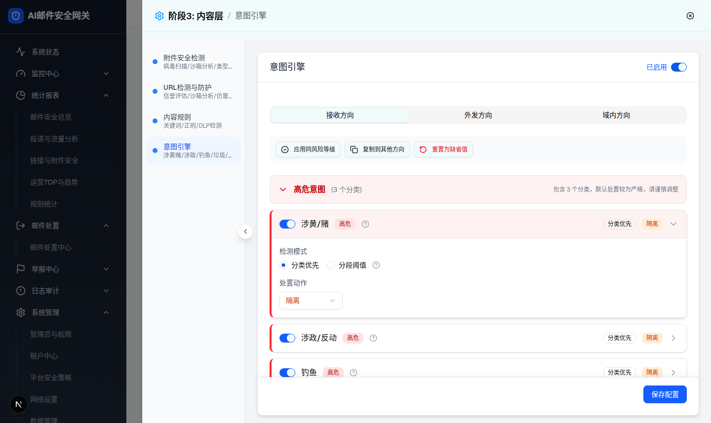
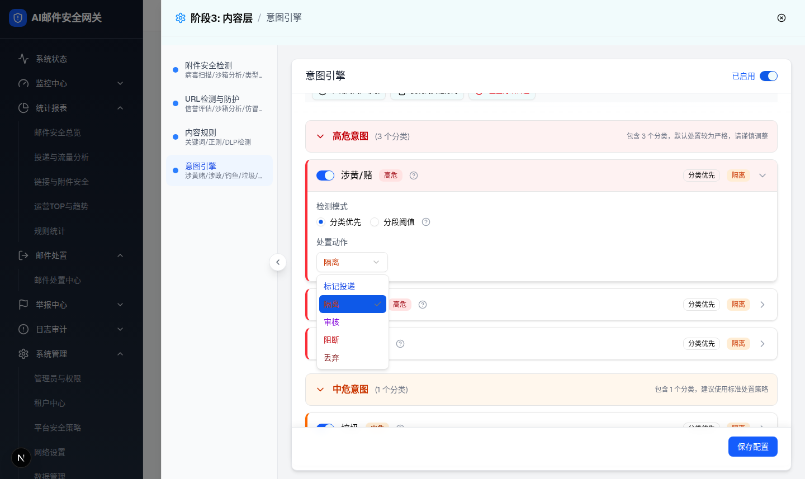
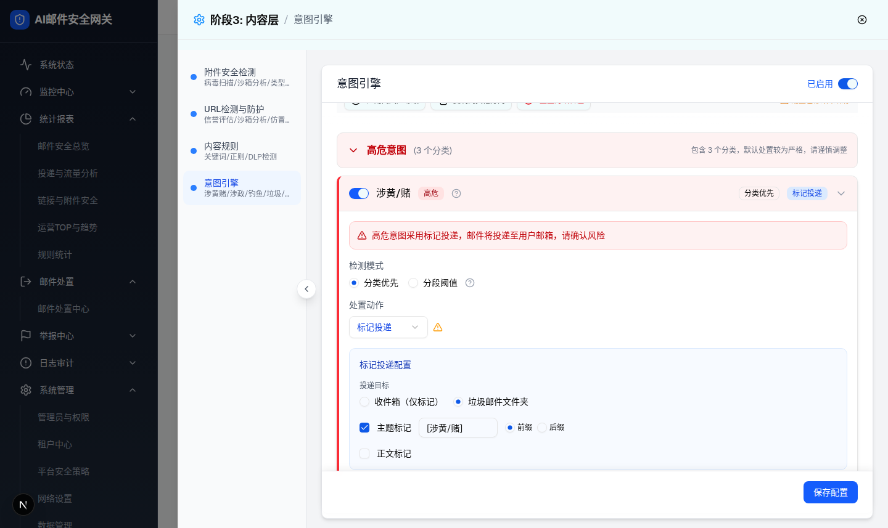
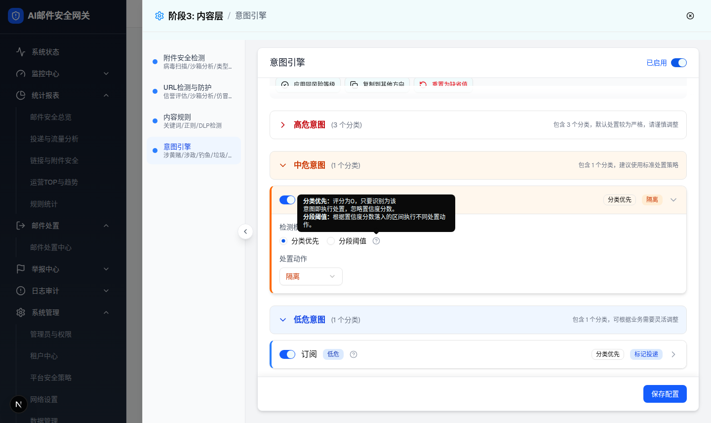
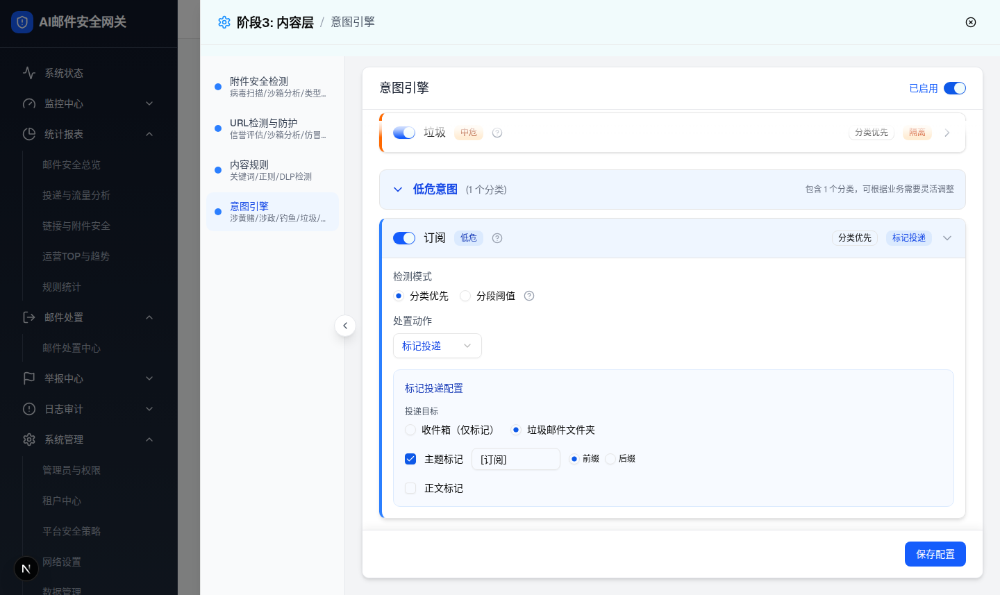
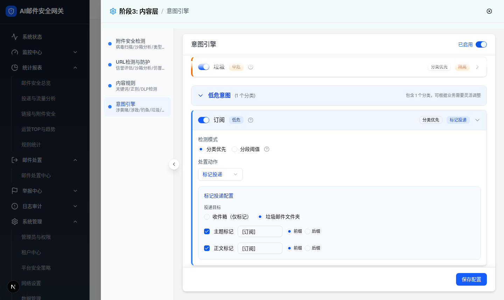
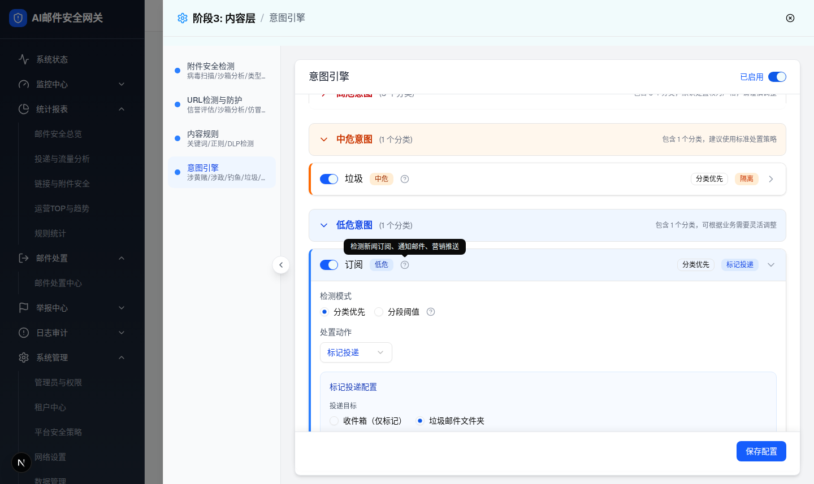
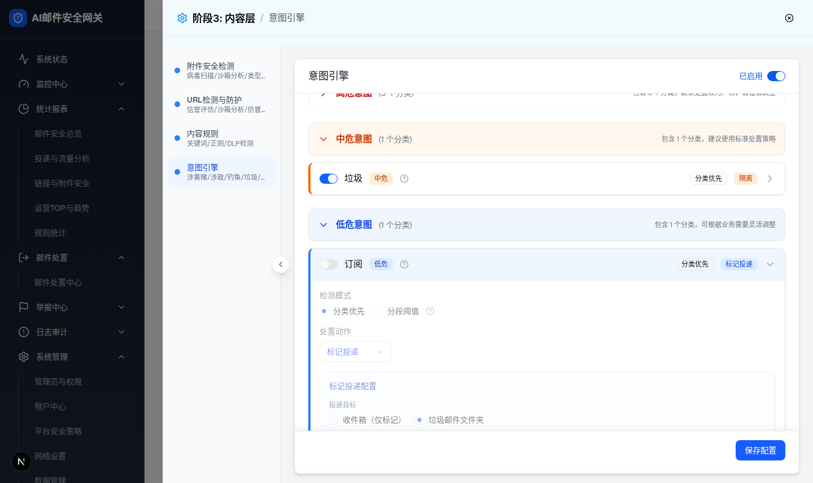
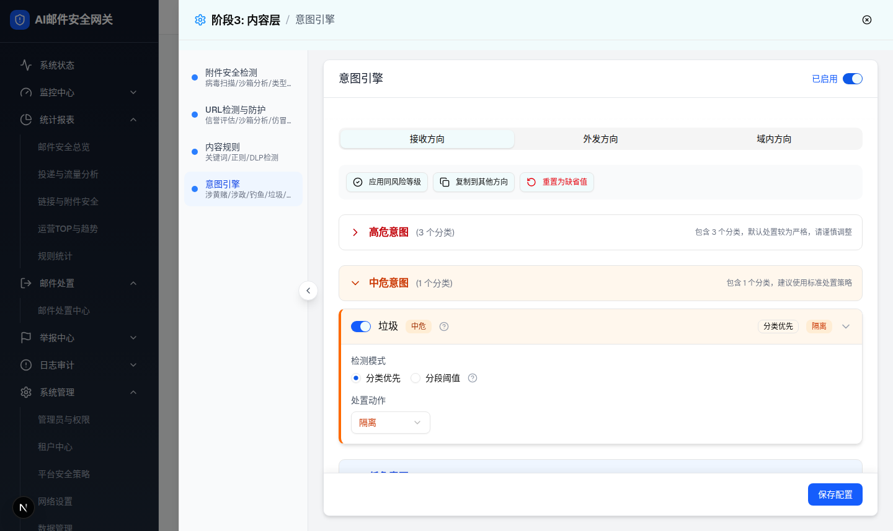

| 所属组件 | 2.3 意图分类卡片 IntentCard（intent-engine-module.tsx） |
| 主文件 | index.html |
| 触发路径 | 层级0 抽屉默认态 → 点击意图卡片头部（非 Switch 区域）→ 卡片展开、其他卡片收起、头部背景变风险浅色 |
| 截图 | intent-card-layer-1-spam-expanded.png 等 9 张（见下） |
| DOM 提取 | 展开卡根节点 div[class*=border-l-]：垃圾（分类优先，无子配置）节点数 43；订阅（标记投递子配置可见）节点数 79；涉黄/赌 节点数 43，展开头部 class 实测 bg-red-50 dark:bg-red-950/20 |
操作提示：切换「处置动作」为 标记投递 可看到红色高危警告 + ⚠ 图标 + 标记投递子配置（demo 行为一致）；hover ? 图标看 Tooltip；点击卡片头部收起/展开；关闭启用开关看半透明禁用态。








p-4 space-y-4 border-t opacity-50 pointer-events-none），头部仍可点击。
| 区域 | 元素 | 默认值/文案 | 交互行为 | i18n（见主文件 §7.1） |
|---|---|---|---|---|
| 卡片头 | 启用 Switch | checked（蓝色 data-[state=checked]:bg-blue-600） | 点击切换该意图启用；stopPropagation 不触发展开；关闭后展开区半透明禁点 | - |
| 卡片头 | 意图名称 + 风险 Badge + ? 图标 | 涉黄/赌|涉政/反动|钓鱼(高危红)、垃圾(中危橙)、订阅(低危蓝) | hover ? 显示该意图描述 Tooltip | intentEngine.intent.* |
| 卡片头 | 检测模式 Badge + 动作 Badge + 箭头 | 分类优先（outline）+ 当前 classificationAction（动作色） | 点击头部展开/收起（单展开互斥）；展开箭头 ›→▾；头部背景变风险浅色 | - |
| 展开区 | 高危警告条 | 「高危意图采用标记投递，邮件将投递至用户邮箱，请确认风险」红底 | 仅 高危 && classificationAction=标记投递 时渲染（阈值模式下不显示） | intentEngine.warning.highRiskMark |
| 展开区 | 检测模式 RadioGroup + ? Tooltip | 分类优先 checked / 分段阈值 | 切换即时替换下方配置区（分类优先↔阈值配置，层级2） | intentEngine.mode.* |
| 展开区 | 处置动作 Select（w-32 h-9） | 接收：隔离(高/中危)、标记投递(低危)；选项 5 项按动作色渲染 | 选择后头部动作 Badge 同步；=标记投递 时显示子配置（仅接收+分类优先）；高危时旁边出现 ⚠ Tooltip 图标 | intentEngine.action.* |
| 标记投递子配置 | 投递目标 RadioGroup | 垃圾邮件文件夹（默认）/ 收件箱（仅标记） | 即时更新配置并标记未保存 | intentEngine.markDeliver.* |
| 标记投递子配置 | 主题标记 Checkbox + Input(maxLength=20) + 前缀/后缀 | 勾选，文案「[意图名]」，前缀 | 取消勾选隐藏输入与位置选择；输入实时保存；超 20 字被 maxLength 截断 | 同上 |
| 标记投递子配置 | 正文标记 Checkbox + Input + 前缀/后缀 | 不勾选（文案默认 [意图名] 前缀） | 勾选后显示输入与位置选择 | 同上 |
| 比对项 | demo 实际 DOM | 提取的 HTML 预览 | 是否一致 |
|---|---|---|---|
| 根节点 | div.border.rounded-lg.border-l-4.border-l-red-500（涉黄/赌）；展开头部 class 含 bg-red-50 | .intent-card 左边框4px红 + 头部浅红底 | 一致 |
| 节点数 | 垃圾展开 43；订阅展开（含子配置）79；涉黄/赌展开 43 | 预览保留头部、警告、模式、动作、子配置全部关键节点（结构裁剪） | 一致（关键节点） |
| 检测模式 radio | #mode-class data-state=checked，#mode-threshold unchecked | 分类优先 checked | 一致 |
| 接收动作选项 | 5 项：标记投递(text-blue-700)/隔离(orange,checked)/审核(purple)/阻断(red-700)/丢弃(red-900) | 同 5 项同顺序 | 一致 |
| 高危警告条 | 切标记投递后渲染 div.bg-red-50.border-red-200，文案一致；⚠ AlertTriangle amber-500 出现在 Select 旁 | 预览切换标记投递后同步显示两处警告 | 一致 |
| 子配置默认值 | 投递目标 target-spam checked；主题标记 checked + input value=[订阅] + subject-prefix checked；正文标记 unchecked（勾选后 body-prefix checked） | 同默认值 | 一致 |
| 条件渲染 | 子配置仅在 接收方向 && mode=classification && action=mark_deliver 时渲染；正文/主题输入仅在对应 checkbox 勾选时渲染 | 预览按同条件显示/隐藏 | 一致 |
| 单意图禁用 | 展开体 class 追加 opacity-50 pointer-events-none | 预览 .dimmed 同效果 | 一致 |
| 意图 Tooltip | 实测「检测新闻订阅、通知邮件、营销推送」 | hover ? 显示同文案 | 一致 |